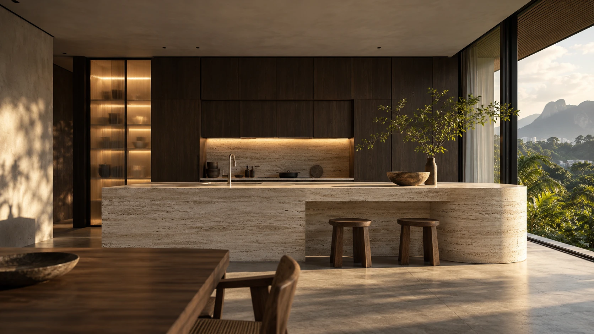
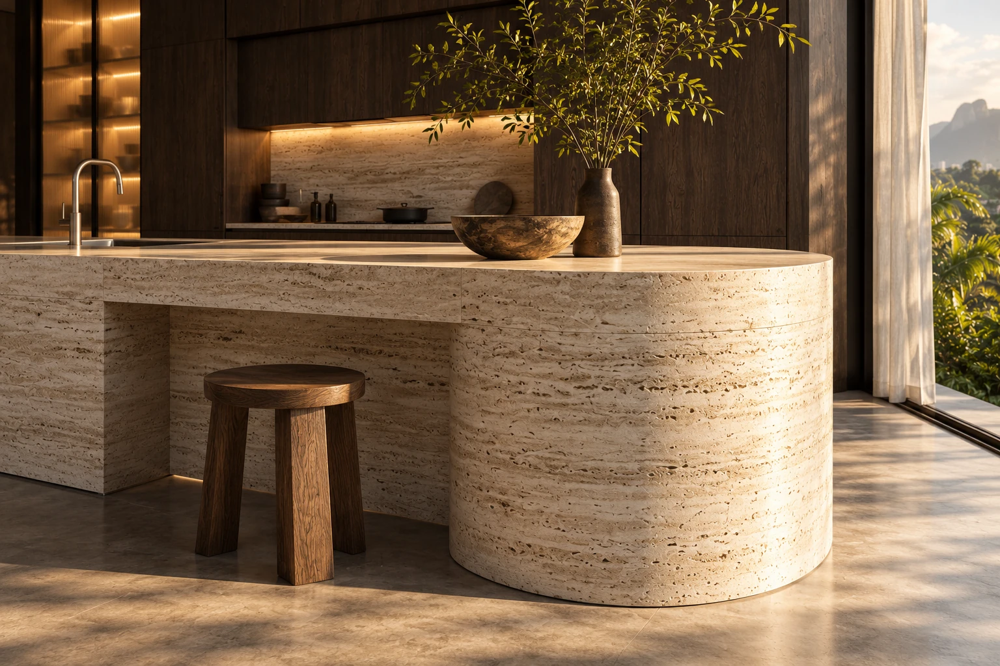
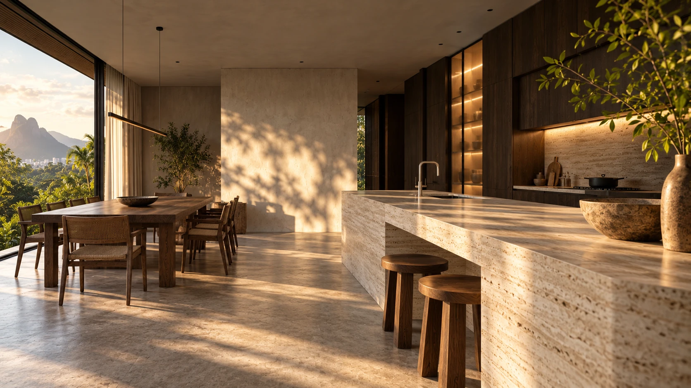

COCINAS & MOBILIARIO A MEDIDABUCARAMANGA, COLOMBIA
Una nueva forma de habitarQuédate
Quédate
un poco más.
Entrar al espacio ↓ESTUDIO DE ESPACIO 01
Visualización conceptual
Visualización conceptual
Una cocina para conversar.
Una pausa entre el día.
Un lugar al que volver.
Diseño y mobiliario que empiezan
por cómo quieres vivir.
Un espacio / Tres miradas
Acércate.
La luz, las superficies y lo que no se ve.
Explora este estudio conceptual.
01 / EL ENCUENTROUn lugar
Un lugar
para reunir.
La isla conecta la preparación con la conversación. Un gesto que abre el espacio.
Estudio conceptual creado para esta propuesta
La personalidad está en los detallesTexturas que
Texturas que
conversan.
La calidez de la madera.
La presencia de la piedra.
El equilibrio de la luz.

Piedra clara
Madera oscura
Paleta ilustrativa. Los materiales y acabados se eligen con el equipo según el proyecto.

HECHO PARA TU MANERA
Visualización conceptualde vivir.
Agathos / Desde sus canalesEl trabajo
El trabajo
de la marca.
Una selección de fotografías publicadas por Agathos.
Explorar su Instagram ↗Tu espacio.
Tu manera.
Calle 105 #26A-60, local 17 · Torre Picasso, Bucaramanga
+57 318 746 1563